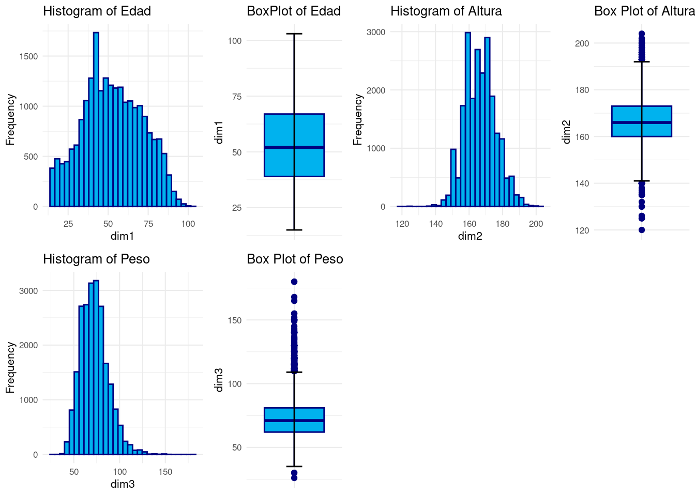

library(readxl) # Para leer los excels
#library(kableExtra) # Para dar formato a las tablas html
library(knitr)
library(gridExtra) # Para cargar bien las tab
library(car) # for bonfferroni testRegresión Lineal: salud_reg
Introducción
dataset
En este cuaderno vamos a analizar el dataset llamado salud_reg.xlsx. Este contiene microdatos relativos a la Encuesta Nacional de Salud a personas en 2017. Altura, Peso, Edad, Sexo e IMC del encuestado con el fin de hacer una regresión del Peso en función del resto de variables y explicar por qué es interesante este estudio.
Concretamente tenemos las siguietnes variables:
Edad: Edad en años cumplidos del encuestado.
Sexo : Sexo del encuestado (1=Hombre, 0=Mujer).
Altura : Edad en cm del encuestado.
Peso : Peso en kg del encuestado.
IMC : “Clasificación del IMC de la persona.
- 1: Peso insuficiente
- 2: Normopeso
- 3: Sobrepeso
- 4: Obesidad
Nota: Notar que el Índice de Masa Corporal (IMC) es un indicador que pone en relación el peso (en kg) de la persona, con su altura en metros (al cuadrado). Informalmente, esta medida se toma como un indicador básico del estado de salud de la persona.
Si conocieramos el IMC exacto, no tendría sentido efectuar el Análisis de Regresión puesto que el Peso se podría calcular directamente despejando IMC y Altura. Sin embarago, tenemos categorías para el IMC, que son: Peso Insuficiente, Nomal, Sobrepeso y Obesidad. Bajo este paradigma tiene sentido plantear la regresión para ver si somos capacedes de recuperar el Peso de una persona, sin conocer directamente su IMC, sino la clase en la que cae, junto con su Altura. Además se verá si el resto de variables ayudan a estimar el Peso.
Descripción del trabajo a realizar
(Esto irá en la web de explica) Se pretende hacer una regresión lineal que explique el Peso en función del resto de las variables.
- Hacer un análisis exploratorio.
- Analizar el modelo planteado y su ajuste de bondad.
- Hacer una conclusión.
Análisis Exploratorio (EDA1)
Lo primero de todo vamos a cargar las librearias necesarias para ejecutar el resto del código del trabajo:
Ahora leemos los datos del excel correspondientes a la pestaña “Datos” y vemos si hay algún NA o algún valor igual a 0 en nuestro dataset. Vemos que no han ningún NA (missing value) en el dataset luego no será necesario realizar ninguna técnica para imputar los missing values o borrar observaciones.
salud <- read_excel("../../../files/salud_reg.xlsx",sheet = "Datos")anyNA(salud) #Any missing data [1] FALSEsummary(salud) EDAD SEXO Altura Peso
Min. : 15.00 Length:22019 Min. :120.0 Min. : 26.00
1st Qu.: 39.00 Class :character 1st Qu.:160.0 1st Qu.: 62.00
Median : 52.00 Mode :character Median :166.0 Median : 71.00
Mean : 52.84 Mean :166.7 Mean : 72.66
3rd Qu.: 67.00 3rd Qu.:173.0 3rd Qu.: 81.00
Max. :103.00 Max. :204.0 Max. :180.00
IMC
Length:22019
Class :character
Mode :character
table(salud$SEXO)
0 1
11701 10318 table(salud$IMC)
1 2 3 4
475 9301 8333 3910 Resumen de la variable EDAD:
La edad varía entre 15 y 103 años.
La mediana (50º percentil) de la edad es 52 años.
La media de la edad es aproximadamente 52.84 años.
El rango intercuartílico (IQR) de la edad va desde el primer cuartil (Q1) a Q3 (39 a 67 años).
Tabla de frecuencia para la variable SEXO:
Hay dos categorías de sexo representadas como “0” y “1”.
Hay 11,701 individuos clasificados como “0” ( mujeres).
Hay 10,318 individuos clasificados como “1” ( hombres).
Tabla de frecuencia para la variable IMC: Hay cuatro categorías de índice de masa corporal (IMC) representadas como “1”, “2”, “3” y “4”. - La frecuencia de la categoría “1” es 475. - La frecuencia de la categoría “2” es 9,301. - La frecuencia de la categoría “3” es 8,333. - La frecuencia de la categoría “4” es 3,910.

[1] 812En los histogramas vemos la forma de cada distribucion las cuales parecen razonables con la idea que podemos tener preconcebida acerca de dichas variables. En la gráfica de la altura se observamos que es bastante más simétrica que el peso, que presenta asimetría postiva. Esto se puede deber a que sobre nuestra altura nosotros no jugamos ningún papel directo, suele venir influencia por la genética y factores fuera del alcance de nuestra mano, de ahí que sea muy simétrica. Sin embargo, el peso es muy fácil aumentarlo disminuirlo. Generalmente en una sociedad desarollada es normal tener más facilidad para comer por exceso que por deceso, luego parece razonable que esté sesgada hacia la derecha.
Regresión Lineal
Hipótesis y indicadores de bondad
Para que una regresión lineal proporcione un buen ajsute a los datos debe cumplir una serie de requisitos que por tanto deben ser verificados al llevar a cabo el estudio. Recordar que la regresión lineal se expresa como:
[ = + ] donde \(\mathbf{Y}\) es la variable respuesta, \(\mathbf{X}\) los predictores, \(\boldsymbol{\beta}\) los coeficientes de la regresión y \(\boldsymbol{\varepsilon}\) el error. [ ====]
Modelo
Inicialmente vamos a considerar un modelo con todas variables predictoras para intentar predecir el \(indice\_total\) y veremos si este modelo cumple las hipótesis necesarias y cuan bueno es.
#Convertir a factor las que toquen
salud$SEXO<-as.factor(salud$SEXO)
salud$IMC<-as.factor(salud$IMC)
#Modelo inicial
lm1<-lm(Peso~EDAD+Altura+IMC+SEXO,salud)
summary(lm1)
Call:
lm(formula = Peso ~ EDAD + Altura + IMC + SEXO, data = salud)
Residuals:
Min 1Q Median 3Q Max
-16.945 -3.845 -0.136 3.511 79.106
Coefficients:
Estimate Std. Error t value Pr(>|t|)
(Intercept) -94.973099 1.026730 -92.501 <2e-16 ***
EDAD 0.027834 0.002286 12.174 <2e-16 ***
Altura 0.854325 0.005845 146.163 <2e-16 ***
IMC2 13.427830 0.270835 49.579 <2e-16 ***
IMC3 26.165190 0.274682 95.256 <2e-16 ***
IMC4 43.389736 0.282822 153.417 <2e-16 ***
SEXO1 1.002444 0.106483 9.414 <2e-16 ***
---
Signif. codes: 0 '***' 0.001 '**' 0.01 '*' 0.05 '.' 0.1 ' ' 1
Residual standard error: 5.734 on 22012 degrees of freedom
Multiple R-squared: 0.8521, Adjusted R-squared: 0.852
F-statistic: 2.113e+04 on 6 and 22012 DF, p-value: < 2.2e-16A primera vista vemos un valor de Multiple R-squared: 0.8521,, lo cual es bastante alto y por tanto nuestro modelo parece capturar bien la variabilidad de la variable respuesta, concretamente un \(85\%\). Sin embargo, en los sucesivos modelos que plantemos no podemos usar como criterio de comparación el \(R-squared\) pues aumenta a la vez que lo hace el número de variables, y por tanto para comparar modelos entre si se debe usar el Adjusted R-squared (que tiene en cuenta el número de variables).
En la línea de los residuos no parece haber contraindicaciones a que estos sigan una distribución normal centrada en cero puesto que tenemos unas medidas de dispersión bastante simétricas. No osbtante, más adelante se procederán a hacer los test pertinentes.
Vamos a quitarle alguna variable a ver que obtenemos:
# Sin Sexo
lm2<-lm(Peso~EDAD+Altura+IMC,salud)
summary(lm2)
Call:
lm(formula = Peso ~ EDAD + Altura + IMC, data = salud)
Residuals:
Min 1Q Median 3Q Max
-16.894 -3.890 -0.128 3.542 79.269
Coefficients:
Estimate Std. Error t value Pr(>|t|)
(Intercept) -1.010e+02 8.013e-01 -126.09 <2e-16 ***
EDAD 3.110e-02 2.264e-03 13.73 <2e-16 ***
Altura 8.912e-01 4.349e-03 204.90 <2e-16 ***
IMC2 1.358e+01 2.709e-01 50.11 <2e-16 ***
IMC3 2.644e+01 2.737e-01 96.61 <2e-16 ***
IMC4 4.368e+01 2.817e-01 155.02 <2e-16 ***
---
Signif. codes: 0 '***' 0.001 '**' 0.01 '*' 0.05 '.' 0.1 ' ' 1
Residual standard error: 5.746 on 22013 degrees of freedom
Multiple R-squared: 0.8515, Adjusted R-squared: 0.8514
F-statistic: 2.524e+04 on 5 and 22013 DF, p-value: < 2.2e-16# Sin IMC
lm3<-lm(Peso~EDAD+Altura,salud)Vemos que el Sexo no parece tener mucha importancia, no así el IMC que cuando lo sustraemos del modelo experimenta una bajada grande de bondad. Vamos a interpretar ahora los parámetros del modelo 1:
summary(lm1)
Call:
lm(formula = Peso ~ EDAD + Altura + IMC + SEXO, data = salud)
Residuals:
Min 1Q Median 3Q Max
-16.945 -3.845 -0.136 3.511 79.106
Coefficients:
Estimate Std. Error t value Pr(>|t|)
(Intercept) -94.973099 1.026730 -92.501 <2e-16 ***
EDAD 0.027834 0.002286 12.174 <2e-16 ***
Altura 0.854325 0.005845 146.163 <2e-16 ***
IMC2 13.427830 0.270835 49.579 <2e-16 ***
IMC3 26.165190 0.274682 95.256 <2e-16 ***
IMC4 43.389736 0.282822 153.417 <2e-16 ***
SEXO1 1.002444 0.106483 9.414 <2e-16 ***
---
Signif. codes: 0 '***' 0.001 '**' 0.01 '*' 0.05 '.' 0.1 ' ' 1
Residual standard error: 5.734 on 22012 degrees of freedom
Multiple R-squared: 0.8521, Adjusted R-squared: 0.852
F-statistic: 2.113e+04 on 6 and 22012 DF, p-value: < 2.2e-16Vemos los siguientes coeficientes:
\(\beta (EDAD)\): tiene un valor muy bajo (0.02), siendo positivo. Esto indica que no parece tener mucho peso en el modelo y que conforme aumente la edad, aumenta el Peso de la persona muy ligeramente, lo cual podría parecer razonable.
\(\beta (Altura)\): tiene un valor de (0.85), siendo positivo. Parece razonable que sea mayor que el del beta relativo a la edad puesto que a más altura, más posibilidad de tener mas masa y por tanto más peso. De ahí que además sea positivo.
Destacar que ahora los siguientes betas se refieren a la variable IMC que es categórica. Es por ello que se toma como referencia la primera categoría (IMC=1) y los coeficientes representan el cambio de pasar de una categoría a otra.
\(\beta (IMC2)\): tiene un valor bastante alto (13.42), siendo positivo. Esto indica que al pasar de la clase IMC=1 A IMC=2, el peso aumenta en 13.42 puntos. Esto parece muy razonable puesto que en IMC=1 se representaba la gente con peso insuficiente y en IMC=2 la gente con peso normal.
\(\beta (IMC3)\): tiene un valor bastante alto (26), siendo positivo. Esto indica que al pasar de la clase IMC=1 A IMC=3, el peso aumenta en 13.42 puntos. Esto parece muy razonable puesto que en IMC=1 se representaba la gente con peso insuficiente y en IMC=3 la gente con sobrepeso. Además también es más grande que el beta anterior, indicando que es mas grande el cambio de peso entre gente con peso insuficiente y sobrepeso que entre las personas con peso insuficiente y peso normal.
\(\beta (IMC4)\): tiene un valor bastante alto (43), siendo positivo. Esto indica que al pasar de la clase IMC=1 A IMC=4, el peso aumenta en 13.42 puntos. Esto parece muy razonable puesto que en IMC=1 se representaba la gente con peso insuficiente y en IMC=4 la gente con obesidad. Además también es más grande que los betas anteriores, indicando que es mas grande el cambio de peso entre gente con peso insuficiente y obesidad que entre el resto de clases.
\(\beta (SEXO1)\): tiene un valor igual a 1 (+1), siendo positivo. Puesto que es una variable factor, esto indica que pasar de la categoría base, mujer, a hombre, aumenta el peso. Esto también parece razonable puesto que manteniendo el resto de variables constantes, los hombres suelen tender a estar más musculados y por tanto tienden a pesar más.
Conclusion
El modelo inicial considerado tiene buenos inidcadores de bondad de ajuste. Además interpretando los resultados parece razonable todos los coeficientes e indicadores obtenidos.
Footnotes
EDA viene del Inglés Exploratory Data Analysis y son los pasos relativos en los que se exploran las variables para tener una idea de que forma toma el dataset.↩︎